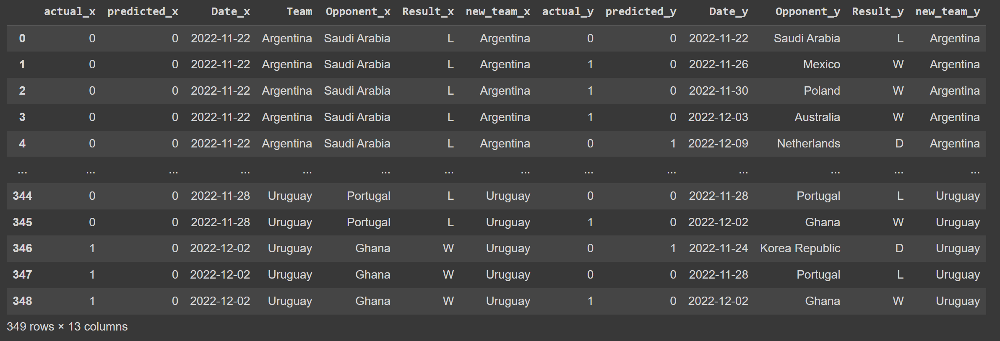

Privacy Dots App
An app that receives notifications from a motion detector and allows you to view all your devices and notifications.

Developed the web application using React Native (Expo)
and JavaScript to display real-time motion detection
notifications.
Integrated Expo’s Push Notification API to seamlessly send
alerts from the Django server to the web application in less
than 1 second.
World Cup Match
Predictor
I developed an AI model that leverages historical data and advanced machine
learning techniques to predict future FIFA World Cup match outcomes with an
impressive 70% accuracy rate.
Web Scraping
Utilized Python libraries Beautiful Soup and Pandas to efficiently web-
scrape and organize comprehensive historical match data, including goals,
player statistics, wins, and losses, ensuring accurate and well-structured
information for analysis.
AI Model

Developed an AI model in Python using the Pandas and scikit-learn
libraries, incorporating the Random Forest algorithm to predict match
outcomes based on the data.